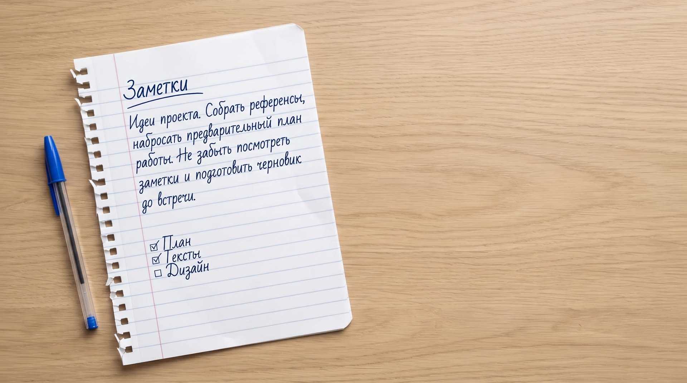
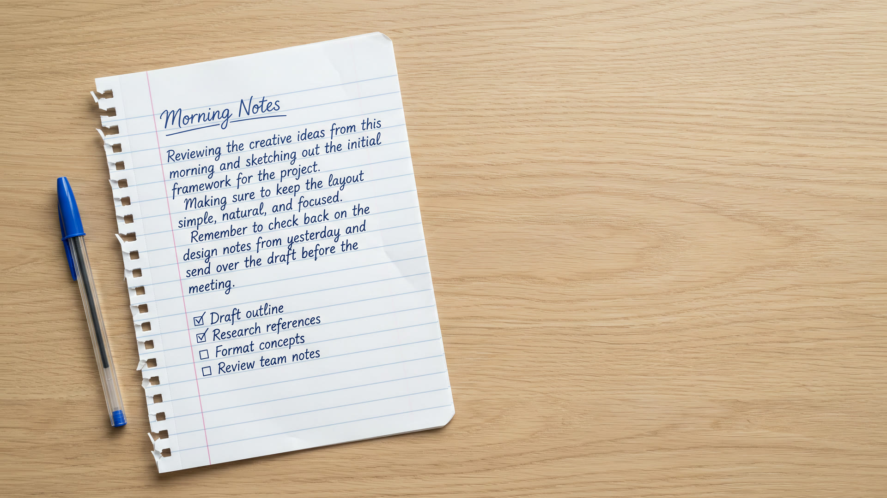
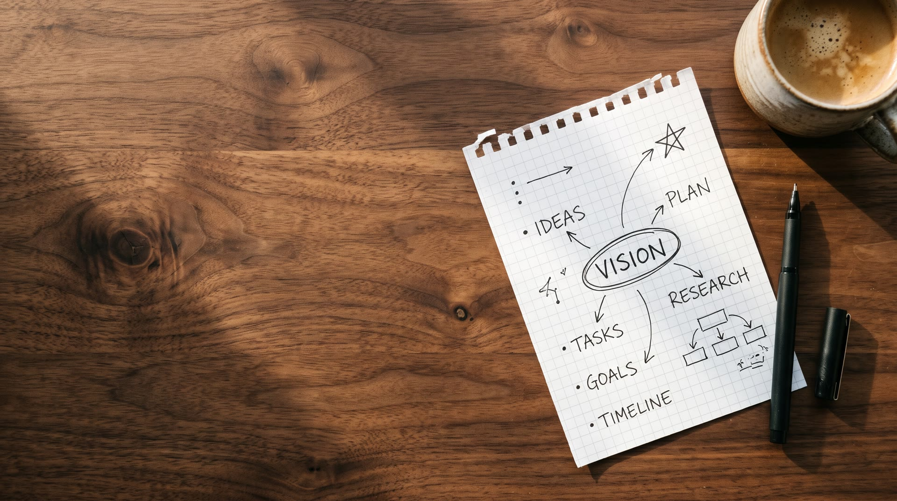

Баннер для лендинга: листок из блокнота с записями
Три варианта под задачу. Формат 16:9, 1920 px; исходники — в 2K. Пустое место сбоку оставлено под заголовок лендинга. Текст на листке, цвет стола и ручки поменяю под вашу тему.


